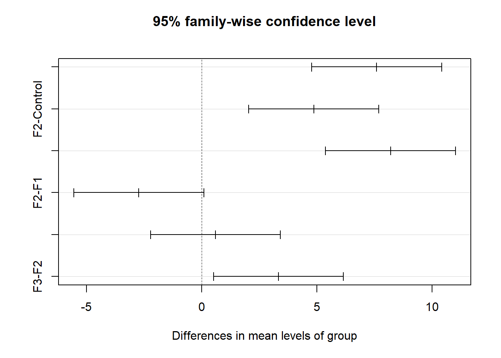
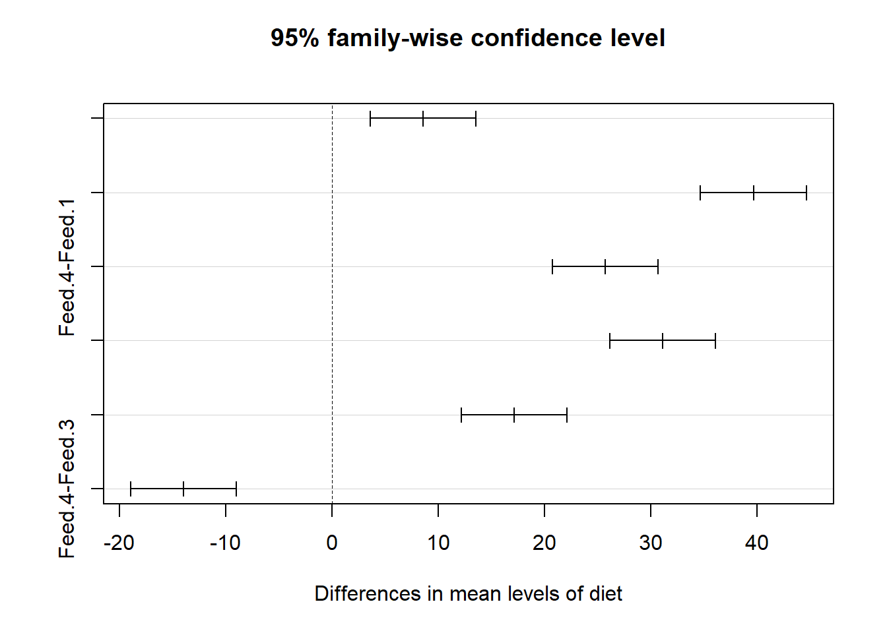
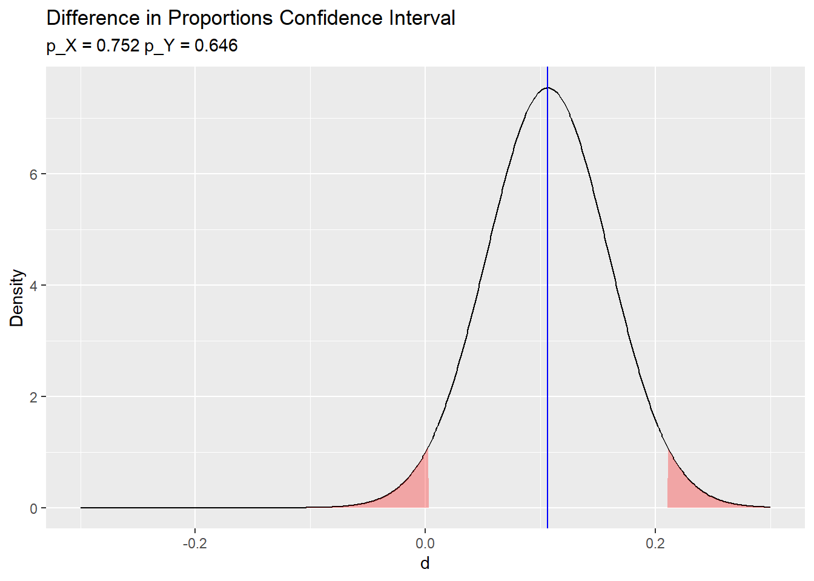

2.1 One-Way Tables
A one-way table is a frequency table for a single categorical variable. You usually construct a one-way table to test whether the frequency counts differ from an hypothesized distribution, or to construct a confidence interval around a proportion.
Here is an example. A researcher crosses tall cut-leaf tomatoes with dwarf potato-leaf tomatoes, then classifies the (n = 1,611) offspring phenotypes. The four phenotypes are expected to occur with relative frequencies 9:3:3:1. The frequencies form a one-way table.
pheno_type <- c("tall cut-leaf", "tall potato-leaf", "dwarf cut-leaf", "dwarf potato-leaf")
pheno_obs <- c(956, 258, 293, 104)
pheno_pi <- c(9, 3, 3, 1) / (9 + 3 + 3 + 1)
pheno_exp <- sum(pheno_obs) * pheno_pi
names(pheno_obs) <- pheno_type
names(pheno_exp) <- pheno_type
data.frame(Phenotype = pheno_type, Frequency = pheno_obs) %>%
flextable::flextable() %>%
flextable::autofit()Phenotype | Frequency |
tall cut-leaf | 956 |
tall potato-leaf | 258 |
dwarf cut-leaf | 293 |
dwarf potato-leaf | 104 |
data.frame(pheno_type, pheno_obs, pheno_exp) %>%
ggplot(aes(x = pheno_type)) +
geom_col(aes(y = pheno_obs), position = position_dodge(), fill = "#2E8BC0") +
geom_point(aes(y = pheno_exp), shape = "asterisk") +
theme_minimal() +
theme(legend.position = "top") +
labs(title = "Observed vs Expected (*)", x = "", y = "Frequency")
You have a few options for analyzing one-way tables.
If you just want to construct a confidence interval around a single level of the variable, e.g., 95% CI for the dwarf cut-leaf proportion, conduct a one-proportion z-test or an exact binomial test.
If you want to compare the frequency counts to an expected distribution, in this case 9:3:3:1, conduct an exact multinomial test (recommended for n-size <= 1,000), Pearson’s chi-squared goodness-of-fit test, or G-test.
If your variable has more than two levels, conduct a Pearson’s chi-squared goodness-of-fit test or G-test.
2.1.1 One-Proportion Z-Test
Conduct a one-proportion z-test to evaluate the success proportion of a binary variable, or a single level of a multinomial variable. It is also called the normal approximation method, and the Wald method.
The test uses the sample proportion \(p\) as an estimate of the population proportion \(\pi\) to evaluate an hypothesized population proportion \(\pi_0\) and/or construct a \((1−\alpha)\%\) confidence interval around \(p\) to estimate \(\pi\) within a margin of error \(\epsilon\).
The normal approximation method is common because it is intuitive to learn, but it only applies when the central limit theorem conditions hold:
- the sample is independently drawn, meaning random sampling without replacement from \(n < 10\%\) of the population in observational studies, or random assignment in experiments,
- there are at least \(n\pi \ge 5\) successes and \(n(1 − \pi) \ge 5\) failures,
- the sample size is \(n \ge 30\), and
- the probability of success is not extreme, \(0.2 < \pi < 0.8\).
If these conditions hold, the sampling distribution of \(\pi\) is normally distributed around \(p\) with standard error \(se_p = \frac{s_p}{\sqrt{n}} = \frac{\sqrt{p(1−p)}}{\sqrt{n}}\). The measured values \(p\) and \(s_p\) approximate the population values \(\pi\) and \(\sigma_\pi\). You can define a \((1 − \alpha)\%\) confidence interval as \(p \pm z_{\alpha / 2}se_p\). Test the hypothesis of \(\pi = \pi_0\) with test statistic \(z = \frac{p − \pi_0}{se_{\pi_0}}\) where \(se_{\pi_0} = \frac{s_{\pi_0}}{\sqrt{n}} = \frac{\sqrt{{\pi_0}(1−{\pi_0})}}{\sqrt{n}}\).
In our phenotype example above, we might want to test whether tall cut-leaf tomatoes occurred in the expected proportion, \(\pi_0 = 9 / (9 + 3 + 3 + 1) = 0.5625\). The sample is a random assignment experiment with \(956 \ge 5\) successes and \(1611 - 956 = 655 \ge 5\) failures, sample size \(n = 1611 \ge 30\), and probability of success \(0.2 < 0.5625 < 0.8\), so the z-test is valid.
##
## 1-sample proportions test without continuity correction
##
## data: 956 out of 1611, null probability 0.5625
## X-squared = 6.2586, df = 1, p-value = 0.01236
## alternative hypothesis: true p is not equal to 0.5625
## 95 percent confidence interval:
## 0.5692397 0.6171563
## sample estimates:
## p
## 0.5934202The first thing you’ll notice is that prop.test() performs a chi-squared goodness-of-fit test, not a one-proportion z-test!
##
## Chi-squared test for given probabilities
##
## data: c(956, 1611 - 956)
## X-squared = 6.2586, df = 1, p-value = 0.01236However, it turns out \(P(\chi^2 > X^2)\) equals \(2 \times P(Z > z).\) Here is the manual calculation of the chi-squared test statistic \(X^2\) and resulting p-value on 1 dof.
pi_0 <- 9 / (9+3+3+1)
p <- 956 / 1611
observed <- c(p, 1-p) * 1611
expected <- c(pi_0, 1-pi_0) * 1611
X2 <- sum((observed - expected)^2 / expected)
pchisq(X2, 1, lower.tail = FALSE)## [1] 0.01235885And here is the manual calculation of the z-test statistic \(z\) and resulting p-value.
## [1] 0.01235885The 95% CI presented by prop.test() is also not the \(p \pm z_{\alpha / 2}se_p\) Wald interval; it is the Wilson interval.
## est lwr.ci upr.ci
## [1,] 0.5934202 0.5692397 0.6171563There are a lot of methods (see ?DescTools::BinomCI), and Wilson is the one Agresti-Coull recommends and prop.test() presents. If you want Wald, use DescTools::BinomCI() with method = "wald".
## est lwr.ci upr.ci
## [1,] 0.5934202 0.5694344 0.617406This matches my manual calculation below.
## [1] 0.5694344 0.6174060The reported p-value is 0.01236, so you can reject the null hypothesis that \(p = 0.5625\). It’s good practice to plot this out to make sure your head is on straight.
se_pi_0 <- sqrt(pi_0 * (1 - pi_0) / 1611)
p_value <- pnorm(z, lower.tail = FALSE) * 2
data.frame(pi = seq(from = 0.5, to = 0.6, by = .001)) %>%
mutate(density = dnorm(pi, pi_0, se_pi_0),
q25 = ifelse(pi < qnorm(p = .025, pi_0, se_pi_0), density, as.numeric(NA)),
q95 = ifelse(pi > qnorm(p = .975, pi_0, se_pi_0), density, as.numeric(NA))) %>%
ggplot() +
geom_area(aes(x = pi, y = q25), fill = "#EF7C8E") +
geom_area(aes(x = pi, y = q95), fill = "#EF7C8E") +
geom_line(aes(x = pi, y = density)) +
geom_vline(aes(xintercept = p), color = "#0C6980", size = 1.0) +
geom_vline(aes(xintercept = pi_0), color = "#000000", size = 0.5, linetype = 2) +
labs(title = "One-Proportion Z-Test",
subtitle = paste0("pi_0 = ", pi_0, ", p = ", round(p, 4),
" (p-value = ", round(p_value,3), ")"),
x = "pi", y = "Density") +
theme_minimal() +
theme(legend.position="none")
2.1.2 Exact Binomial Test
The Clopper-Pearson exact binomial test is precise, but is theoretically complicated in that it inverts two single-tailed binomial tests. No formulas here - I will just rely on the software. The exact binomial method also works for small sample sizes and for extreme probabilities of success. It has only two conditions: independence, and at least \(n\pi \ge 5\) successes or \(n(1−\pi)\ge 5\) failures.
In the phenotype example above, we wanted to test whether tall cut-leaf tomatoes occurred in the expected proportion, \(\pi_0 = 9 / (9 + 3 + 3 + 1) = 0.5625\). The sample is a random assignment experiment with \(956 \ge 5\) successes and \(1611 - 956 = 655 \ge 5\) failures, so the exact binomial test is valid.
##
## Exact binomial test
##
## data: 956 and 1611
## number of successes = 956, number of trials = 1611, p-value = 0.01289
## alternative hypothesis: true probability of success is not equal to 0.5625
## 95 percent confidence interval:
## 0.5689717 0.6175276
## sample estimates:
## probability of success
## 0.5934202The exact binomial test uses the “method of small p-values”. In this method, the probability of observing \(p\) as far or further from \(\pi_0\) is the sum of all \(P(X=p_i)\) where \(p_i <= p\).
p <- dbinom(956, 1611, 0.5625)
p_i <- dbinom(0:1611, 1611, 0.5625)
map(p_i, function(x) if_else(x <= p, x, 0)) %>% unlist() %>% sum()## [1] 0.01289442You can read about the construction of the confidence interval on Wikipedia and if you figure it out,
## [1] 0.538175## [1] 0.5865922## [1] 0.026166252.1.3 Exact Tests
If the sample size is small, use an exact test of goodness-of-fit to test whether the observed values of a nominal variable fit a theoretical expectation. The most common version is the exact binomial test for binomial variables, but there is also an exact multinomial test. When sample sizes are larger (>=1,000), use the G-test or the chi-squared test of goodness-of-fit.
The phenotype experiment had 4 levels, but I’ll collapse it into 2 for sake of example of an exact binomial test. Suppose you crossed the two species and were only concerned with one the size (dwarf or tall) of the offspring. The expected ratio of tall:dwarf (the null hypothesis) in this example was 3:1, or 1208.25:402.75. The observed values were 1214:397 for a ratio of ~3.1:1.
pheno_type2 <- c("tall", "dwarf")
pheno_obs2 <- c(sum(pheno_obs[1:2]), sum(pheno_obs[3:4]))
pheno_pi2 <- c(3, 1) / (3 + 1)
pheno_exp2 <- sum(pheno_obs2) * pheno_pi2
names(pheno_obs2) <- pheno_type2
names(pheno_exp2) <- pheno_type2
data.frame(pheno_type2, pheno_obs2, pheno_exp2) %>%
ggplot(aes(x = pheno_type2)) +
geom_col(aes(y = pheno_obs2), position = position_dodge(), fill = "#2E8BC0") +
geom_point(aes(y = pheno_exp2), shape = "asterisk") +
theme_minimal() +
theme(legend.position = "top") +
labs(title = "Observed vs Expected (*)", x = "", y = "Frequency")
The mixture of dwarf and tall is a binomial random variable with density function
\[f(x;n, \pi) = \frac{n!}{x!(n-x)!} \pi^x (1-\pi)^{n-x}.\]
The probability of observing \(x >= 1214\) tall offspring from a sample of \(n = 1,611\) when the probability of tall is \(\pi = 0.75\) is 0.383. The probability of observing a value this far from the expected value of 1,208 is twice that, or 0.766, so do not reject the null hypothesis that the observed values equaled the expected values.
# For lower.tail = FALSE, P(X > x)
# For lower.tail = TRUE, P(X <= x)
pbinom(1213, 1611, 0.75, FALSE) * 2.0## [1] 0.7659371Technically, you could have asked the question from the other angle: what is the probability of observing \(x <= 397\) dwarf offspring.
## [1] 0.7659371The exact binomial test is sometimes used to measure directional changes in quantitative measures in paired studies. E.g., you might measure hair density before and after a treatment. You could use a paired t–test or a Wilcoxon signed-rank test with null hypothesis that the mean or median difference between pairs of observations is zero. However, you may just be interested in direction, not magnitude.
[^John McDonald’s Handbook of Biological Statistics], advocates for the method of small p-values. In this method, the probability of observing a value this far far from the expected value equals the sum of all probabilities <= to the probability of the observed value.
p_o <- dbinom(956, 1611, 0.5625)
x <- dbinom(0:1611, 1611, 0.75)
map(x, function(x) if_else(x <= p_o, x, 0)) %>% unlist() %>% sum()## [1] 0.01042149This method is essentially how the exact multinomial goodness-of-fit test works. Back to the original phenotype example with expected relative frequences 9:3:3:1
2.1.4 Chi-Squared Goodness-of-Fit Test
The chi-squared goodness-of-fit test tests whether the observed frequency counts, \(O_j\), of the \(J\) levels of a categorical variable differ from the expected frequency counts, \(E_j\). \(H_0\) is \(O_j = E_j\).
The Pearson goodness-of-fit test statistic is
\[X^2 = \sum \frac{(O_j - E_j)^2}{E_j}\]
where \(O_j = p_j n\) and \(E_j = \pi_j n\). The sampling distribution of \(X^2\) approaches the \(\chi_{J-1}^2\) as the sample size \(n \rightarrow \infty\). The assumption that \(X^2\) is distributed \(\sim \chi^2\) is not quite correct, so you will sometimes see researchers subtract -.5 from the differences to increase the p-value, the so-called the Yates Continuity Correction.
\[X^2 = \sum \frac{(O_j - E_j - 0.5)^2}{E_j}\]
\(X^2 \rightarrow 0\) as the saturated model (the observed data represent the fit of the saturated model, the most complex model possible with the data) proportions approach the expected proportions, \(p_j \rightarrow \pi_j\). The chi-squared test calculates the probability of the occurrence of \(X^2\) at least as extreme given that it is a chi-squared random variable with degrees of freedom equal to the number of levels of the variable minus one, \(J-1 = 3\). In our phenotypes example, \(X^2 = 9.55\) and \(P(X^2 > 9.55) = 0.0228\).
pheno_dof <- length(pheno_type) - 1
pheno_x2 <- sum((pheno_obs - pheno_exp)^2 / pheno_exp)
pheno_p <- pchisq(q = pheno_x2, df = pheno_dof, lower.tail = FALSE)
pheno_p## [1] 0.02284158In practice, just use the chisq.test() function.
##
## Chi-squared test for given probabilities
##
## data: pheno_obs
## X-squared = 9.5465, df = 3, p-value = 0.02284The function applies the Yates continuity correction by default, so I had to specify correct = FALSE to exclude it. In this case, setting it to TRUE has almost no effect because the sample size is large.
The p-value based on the \(\chi^2\) distribution with 3 d.f. is .023, so the test rejects the null hypothesis that the observed frequencies are consistent with expectations at the \(\alpha = 0.05\) level.
data.frame(chi2 = seq(from = 0, to = 20, by = .1)) %>%
mutate(density = dchisq(chi2, pheno_dof)) %>%
mutate(q95 = ifelse(chi2 > qchisq(p = .95, df = pheno_dof), density, as.numeric(NA))) %>%
ggplot() +
geom_area(aes(x = chi2, y = q95), fill = "#EF7C8E") +
geom_line(aes(x = chi2, y = density)) +
geom_vline(aes(xintercept = pheno_x2), color = "#0C6980", size = 1.0) +
labs(title = "Chi-Square Goodness-of-Fit Test",
subtitle = paste0("Chi-square = ", round(pheno_x2,2),
" (p = ", round(pheno_p,3), ")"),
x = "chisq", y = "Density") +
theme_minimal() +
theme(legend.position="none")
If you reject \(H_0\), inspect the residuals to learn which differences contribute most to the rejection. \(X^2\) is a sum of squared standardized cell differences, or “Pearson residuals”,
\[r_i = \frac{o_j - e_j}{\sqrt{e_j}}\]
Cells with the largest \(|r|\) contribute the most to the total \(X^2\).
## tall cut-leaf tall potato-leaf dwarf cut-leaf dwarf potato-leaf
## 0.28682269 0.67328098 0.02848093 0.01141540The two “tall” cells contributed over 95% of the \(X^2\) test statistic, with the tall potato-leaf accounting for 67%. This aligns with what you’d expect from the bar plot.
If you want to test whether the data conform to a particular distribution instead of some set of theoretical values, the test is nearly the same except for an adjustment to the d.f. Suppose you sample n = 100 families and count the number of children. The count of children is a Poisson random variable, \(J \sim Pois(\lambda)\) with maximum likelihood estimate \(\hat{\lambda} = \sum{j_i O_i} / \sum{O_i}\). The probabilities for each possible count are
\[f(j; \lambda) = \frac{e^{-\hat{\lambda}} \hat{\lambda}^j}{j!}.\]
fam_size <- c(0:5)
fam_obs <- c(19, 26, 29, 13, 10, 3)
fam_lambda <- sum(fam_size * fam_obs) / sum(fam_obs)
fam_f <- exp(-fam_lambda) * fam_lambda^fam_size / factorial(fam_size)
fam_exp <- fam_f * sum(fam_obs)Compare the expected values to the observed values with the chi-squared goodness of fit test, but in this case, \(df = 6 - 1 - 1\) because the estimated parameter \(\lambda\) reduces d.f. by 1.
fam_X2 <- sum((fam_obs - fam_exp)^2 / fam_exp)
fam_dof <- length(fam_size) - 1 - 1 # subtract 1 for lambda estimation
pchisq(q = fam_X2, df = fam_dof)## [1] 0.4154322Be careful of this adjustment to the d.f. because chisq.test() does not take this into account, and you cannot override the d.f.!
2.1.5 G-Test
The G-test is a likelihood-ratio statistical significance test increasingly being used instead of chi-squared tests. The test statistic is defined
\[G^2 = 2 \sum O_j \log \left[ \frac{O_j}{E_j} \right]\]
where the 2 multiplier asymptotically aligns with the chi-squared test formula. G is approximately a chi-squared distribution, with the same number of degrees of freedom as in the corresponding chi-squared test. In fact, the chi-squared test statistic is a second order Taylor expansion of the natural logarithm around 1.
pheno_g2 <- 2 * sum(pheno_obs * log(pheno_obs / pheno_exp))
pchisq(q = pheno_g2, df = pheno_dof, lower.tail = FALSE)## [1] 0.02000552This is pretty close to what we got using the \(X^2\) test statistic:
## [1] 0.02284158In practice, use the DescTools::GTest() function to conduct a G-test.
##
## Log likelihood ratio (G-test) goodness of fit test
##
## data: pheno_obs
## G = 9.8368, X-squared df = 3, p-value = 0.02001According to the function documentation, the G-test is not usually used for 2x2 tables.
2.1.6 Fisher Exact Test
Fisher’s exact test is an “exact test” in that the p-value is calculated exactly from the hypergeometric distribution rather than relying on the approximation that the test statistic distribution approaches \(\chi^2\) as \(n \rightarrow \infty\).
The test is applicable in situations where
- the row totals \(n_{i+}\) and the column totals \(n_+j\) are fixed by study design (rarely applies), and
- the expected values of >20% of cells (at least 1 cell in a 2x2 table) have expected cell counts <5, and no expected cell count is <1.
The famous example of the Fisher exact test is the “Lady tea testing” example. A lady claims she can guess whether the milk was poured into the cup before or after the tea. The experiment consists of 8 trials, 4 of which pour the milk first, and 4 which pour the milk second. The lady guesses correctly 6 of the eight cups.
tea <- matrix(c(3, 1, 1, 3), nrow = 2,
dimnames = list(Guess = c("Milk", "Tea"),
Truth = c("Milk", "Tea")))
tibble::tribble(
~` `, ~Men, ~Women, ~Total,
"Studying", "k", "K-k", "K",
"No-Studying", "n-k", "(N-K)-(n-k)", "N-K",
"Total", "n", "N-n", "N"
) %>%
flextable::flextable() %>%
flextable::autofit() %>%
flextable::bold(part = "header") %>%
flextable::bold(part = "body", i = 3) %>%
flextable::bold(part = "body", j = 4) %>%
flextable::add_header_row(values = c("", "Lady's Guess", "", ""))Lady's Guess | |||
| Men | Women | Total |
Studying | k | K-k | K |
No-Studying | n-k | (N-K)-(n-k) | N-K |
Total | n | N-n | N |
The p-value from the test is computed as if the margins of the table are fixed. This leads under a null hypothesis of independence to a hypergeometric distribution of the numbers in the cells of the table ([Wikipedial(https://en.wikipedia.org/wiki/Fisher%27s_exact_test)). Fisher’s exact test is useful for small n-size samples where the chi-squared distribution assumption of the chi-squared and G-test tests fails. Fisher’s exact test is overly conservative (p values too high) for large n-sizes.
tibble::tribble(
~` `, ~Men, ~Women, ~Total,
"Studying", "k", "K-k", "K",
"No-Studying", "n-k", "(N-K)-(n-k)", "N-K",
"Total", "n", "N-n", "N"
) %>%
flextable::flextable() %>%
flextable::autofit() %>%
flextable::bold(part = "header") %>%
flextable::bold(part = "body", i = 3) %>%
flextable::bold(part = "body", j = 4)
| Men | Women | Total |
Studying | k | K-k | K |
No-Studying | n-k | (N-K)-(n-k) | N-K |
Total | n | N-n | N |
The Hypergeometric density function is \[f_X(k|N, K, n) = \frac{{{K}\choose{k}}{{N-K}\choose{n-k}}}{{N}\choose{n}}.\]
The density is the exact hypergeometric probability of observing this particular arrangement of the data, assuming the given marginal totals, on the null hypothesis that the conditional probabilities are equal.
The phenotype example had 4 levels, but I can collapse it into 2 for sake of example. Suppose you crossed the two species and were only concerned with one attribute: size (dwarf or tall):
pheno_obs2 <- c(sum(pheno_obs[1:2]), sum(pheno_obs[3:4]))
pheno_exp2 <- c(sum(pheno_exp[1:2]), sum(pheno_exp[3:4]))
fisher.test(c(1,11), c(9,3))##
## Fisher's Exact Test for Count Data
##
## data: c(1, 11) and c(9, 3)
## p-value = 1
## alternative hypothesis: true odds ratio is not equal to 1
## 95 percent confidence interval:
## 0.00000 39.00055
## sample estimates:
## odds ratio
## 02.1.7 Special Case: Proportion Test and Exact Binomial Test
A special case of the one-way table is the \(2 \times 1\) table for a binomial random variable. When you calculate a single proportion \(p\), you can compare it to a hypothesized \(\pi_0\), or create a confidence interval around the estimate.
Suppose a company claims to resolve at least 70% of maintenance requests within 24 hours. In a random sample of \(n = 50\) repair requests, the company resolves \(O_1 = 33\) (\(p_1 = 66\%)\) within 24 hours. At a 5% level of significance, is the maintenance company’s claim valid?
o <- c(33, 17)
n <- sum(o)
cell_names <- c("resolved", "not resolved")
names(o) <- cell_names
print(o)## resolved not resolved
## 33 17The null hypothesis is that the maintenance company resolves \(\pi_0 = 0.70\) of requests within 24 hours, \(H_0: \pi = \pi_0\) with alternative hypothesis \(H_a: \pi < \pi_0\). This is a left-tailed test with an \(\alpha = 0.05\) level of significance.
The sample is independently drawn without replacement from <10% of the population (by assumption) and there were >=5 successes, so you can use the Clopper-Pearson exact binomial test. Clopper-Pearson inverts two single-tailed binomial tests at the desired alpha.
##
## Exact binomial test
##
## data: o
## number of successes = 33, number of trials = 50, p-value = 0.3161
## alternative hypothesis: true probability of success is less than 0.7
## 95 percent confidence interval:
## 0.000000 0.770452
## sample estimates:
## probability of success
## 0.66There is insufficient evidence (p = 0.3161) to reject \(H_0\) that true probability of success is less than 0.7.
library(mfstylr)
x <- c(0:50)
p_x <- dbinom(x = x, size = n, prob = pi_0)
observed <- factor(if_else(x == o[1], 1, 0))
data.frame(x, p_x, observed) %>%
ggplot(aes(x = x, y = p_x, fill = observed)) +
geom_col() +
theme_mf() +
scale_fill_mf() +
labs(title = "Exact Binomial")
There were >=5 failures, >=30 observations, and the measured probability of success was within (.2,.80), so you can also use the Wald normal approximation method where \(\pi = p \pm z_{\alpha/2} SE\) and \(Z = (p - \pi_0) / SE\) where \(SE = \sqrt{\pi_0 (1 - \pi_0) / n}\).
p <- o[1] / sum(o)
se <- sqrt(pi_0 * (1 - pi_0) / sum(o))
z <- (p - pi_0) / se
pnorm(q = p, mean = pi_0, sd = se, lower.tail = TRUE)## resolved
## 0.268547Again, there is insufficient evidence (p = 0.2685) to reject \(H_0\) that true probability of success is less than 0.7. The 95% CI around the measured p = 0.66 is
## resolved
## 0.0000000 0.6958645